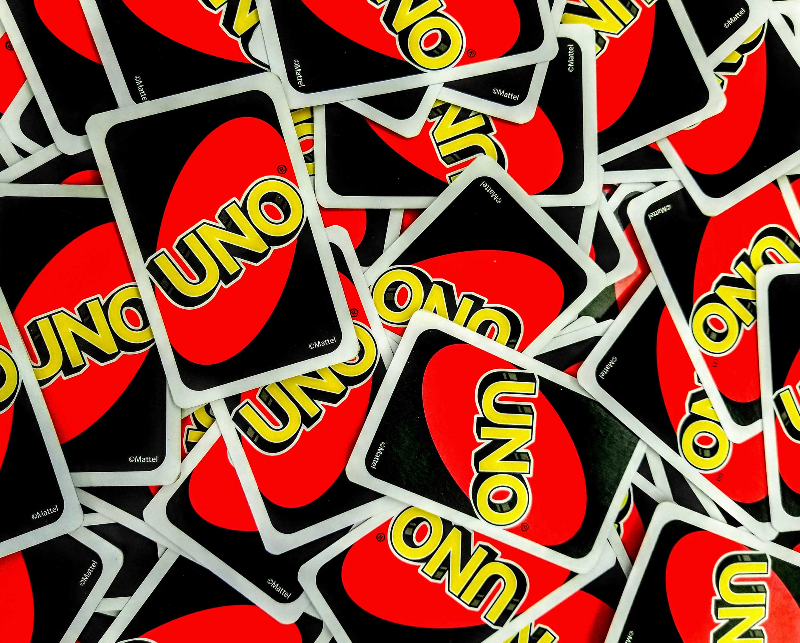

4 uno rules you're playing wrong
the popular american card game uno has simple rules, right?
wrong!
here are some rules you're probably playing incorrectly.
red -- if you don't have a card to play, you only have to pick up one card
you don't have to keep drawing cards until you get one that matches the discard pile, and you can even play it right away!
blue -- you can't stack or chain cards
sorry, you can't make your little brother pick up 6 cards by playing a draw 2 after a draw 4. If a draw card is played, the next player picks up the cards and misses their turn.
yellow -- you can win with an action card
wild, skip, even reverse - doesn't matter as long as it matches the color!
green -- in two player mode reverse is treated as a skip
the other player's turn is skipped and you can play again right away. same with draw cards!